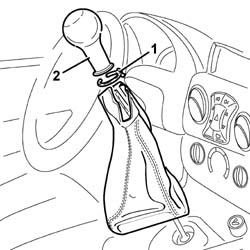

2125C24 gear lever knob - r + r
- Path
- Procedures > 21 GEARBOX UNIT > 2125 MANUAL GEARBOX EXTERNAL CONTROLS > 2125C manual gearbox external control (cables) > 2125C24 gear lever knob - r + r
- Kind
- repair procedure (removal / refitting; the operation number is the code)
- Applies to
- all engines; all production periods
- Interactive page
- https://sloeber94.github.io/elrnDB-fDbl/en/#/2584597
Applies to: all engines; all production periods
 Removing
Removing
 Refitting
Refitting1. Cut the band securing the boot to the grip.
2. Separate the boot from the knob, pull the grip and remove it.

Applies to: all engines; all production periods
Refitting
RemovingFit the gear lever grip, fitting it manually and checking that the knob is secure.
Using a new band, fit the boot and secure it to the grip.